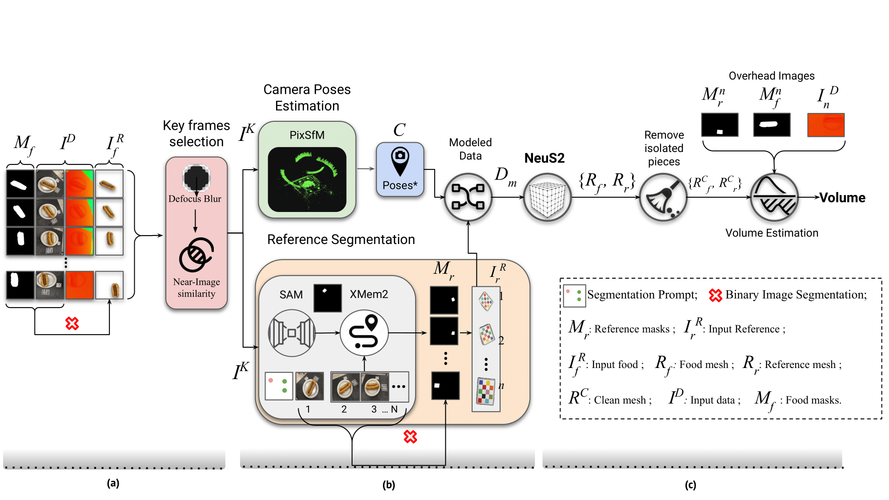

VolETA:
One- and Few-shot Food Volume Estimation
- Ahmad AlMughrabi Universitat de Barcelona
- Umair Haroon Universitat de Barcelona
- Ricardo Marques* Universitat de Barcelona
- Petia Radeva* Universitat de Barcelona
Abstract
Accurate food volume estimation is essential for dietary assessment, nutritional tracking, and portion control applications. We present VolETA, a sophisticated methodology for estimating food volume using 3D generative techniques. Our approach creates a scaled 3D mesh of food objects using one- or few-RGBD images. We start by selecting keyframes based on the RGB images and then segmenting the reference object in the RGB images using XMem++. Simultaneously, camera positions are estimated and refined using the PixSfM technique. The segmented food images, reference objects, and camera poses are combined to form a data model suitable for NeuS2. Independent mesh reconstructions for reference and food objects are carried out, with scaling factors determined using MeshLab based on the reference object. Moreover, depth information is used to fine-tune the scaling factors by estimating the potential volume range. The fine-tuned scaling factors are then applied to the cleaned food meshes for accurate volume measurements. Similarly, we enter a segmented RGB image to the One-2-3-45 model for one-shot food volume estimation, resulting in a mesh. We then leverage the obtained scaling factors to the cleaned food mesh for accurate volume measurements. Our experiments show that our method effectively addresses occlusions, varying lighting conditions, and complex food geometries, achieving robust and accurate volume estimations with 10.97\% MAPE using the MTF dataset. This innovative approach enhances the precision of volume assessments and significantly contributes to computational nutrition and dietary monitoring advancements.
Propose Framework
In our method for estimating food volume with just a few photos, we use ID and food object masks as input. We start by selecting keyframes from the RGB images and removing blurry and overlapping images (IK). Then, we use PixSfM to estimate camera poses (C). At the same time, we segment the reference object using SAM with a segmentation prompt from the user. We then use the XMem++ method to generate reference object masks for all frames using the reference object mask and RGB images. After that, we apply a binary image segmentation method to RGB images (IK), reference object masks (Mr), and food object masks (Mf), resulting in RGBA images (IRr). We then transform the RGBA images and poses to generate meaningful metadata and create modeled data (Dm). Next, we input the modeled data into NeuS2 to reconstruct colorful meshes for the reference (Rr) and food objects (Rf). To ensure accuracy, we use "Remove Isolated Pieces" with diameter thresholding to clean up the mesh and remove small isolated pieces that do not belong to the reference or food mesh resulting in ({RCr, RCf}). Finally, we manually identify the scaling factor using the reference mesh via MeshLab (S). We fine-tune the scaling factor using depth information and the food masks and then apply the fine-tuned scaling factor (Sf) to the cleaned food mesh to generate a scaled food mesh (RFf) in the meter unit.
Visual Results

1

2

3

4

5

6

7

8

9

10

11

13

14
16

17

18

19

20